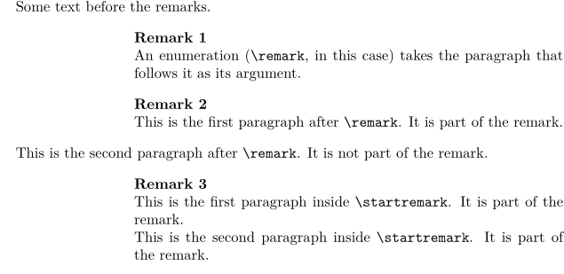
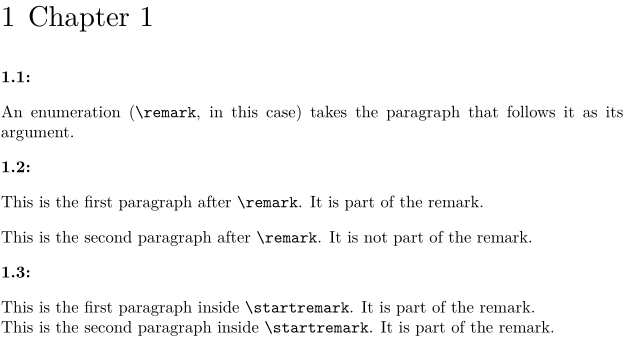
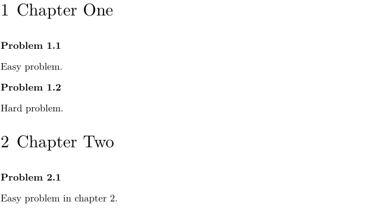
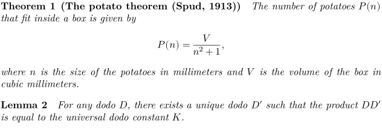

Contents
Summary
Use \defineenumeration to create a numbered text element.
Settings
| \defineenumeration[...][...][...=...,...] | |
| [...] | name |
| [...] | name |
| ...=...,... | inherits from \setupenumeration |
Description
\defineenumeration
you can define the commands for a numbered text element, like remarks or questions. For example, if you want numbered remarks in your document you can define the environment as follows:
\defineenumeration [remark] [alternative=top, % was "location" in MkII text=Remark, % Display header as "Remark 1" headstyle=bold, % Bold remark headers inbetween={\blank[nowhite]}, % No blank line between remark header and remark after=\blank] % Blank line after the remark.
This creates the new commands \remark, \resetremark, \nextremark, and \startremark ... \stopremark.
Examples
Example 1
-
\setupindenting[yes,small,first] \defineenumeration[remark] [alternative=top, text=Remark, inbetween={\blank[nowhite]}, after=\blank, headstyle=bold, margin=1in,] Some text before the remarks. \remark An enumeration (\tex{remark}, in this case) takes the paragraph that follows it as its argument. \remark This is the first paragraph after \tex{remark}. It is part of the remark. This is the second paragraph after \tex{remark}. It is not part of the remark. \startremark This is the first paragraph inside \tex{startremark}. It is part of the remark. This is the second paragraph inside \tex{startremark}. It is part of the remark. \stopremark
Gives:
- 
The heading can be placed on the same line as the text that follows by using the value 'left' for the alternative property. The width of the header is controlled by the 'width' parameter, and the spacing to the text by the 'distance' parameter. The text on the left side of the number is defined by 'left' and the text on the right by the 'right' parameter. Below the chapter number is appended before the enumeration number. The text before the number can be overridden with the 'text' parameter. Before we override the default text 'remark' with no value.
-
\chapter[chpt1]{Chapter 1} \defineenumeration[remark] [location=left,left={\in[chpt1]}.,right=:,width=0.3in,distance=0.02in,text=] \remark An enumeration (\tex{remark}, in this case) takes the paragraph that follows it as its argument. \remark This is the first paragraph after \tex{remark}. It is part of the remark. This is the second paragraph after \tex{remark}. It is not part of the remark. \startremark This is the first paragraph inside \tex{startremark}. It is part of the remark. This is the second paragraph inside \tex{startremark}. It is part of the remark. \stopremark
Gives:
- 
Having the chapter number automatically prefixed can also be achieved using the "prefix" key (instead of putting in the text with the "left" key):
-
\setuphead[chapter][page=no] % to fit example on one page \defineenumeration[problem][way=bychapter, prefix=chapter, text=Problem] \chapter{Chapter One} \startproblem Easy problem. \stopproblem \startproblem Hard problem. \stopproblem \chapter{Chapter Two} \startproblem Easy problem in chapter 2. \stopproblem
This code produces the following document:
- 
Theorem and Lemma
-
% by Mikael Sundqvist, 2023-05 \defineenumeration[Theorem] \setupenumeration[Theorem] [alternative=serried, title=yes, way=bychapter, prefix=chapter, width=fit, style=\it,] % Lemma inherits all properties from Theorem and just overrides the name: \defineenumeration[Lemma][Theorem][text=Lemma] \startTheorem[title={The potato theorem (Spud, 1913)}] The number of potatoes \im{P(n)} that fit inside a box is given by \startformula P(n) = \frac{ V }{ n^2 + 1 }, \stopformula where \im{n} is the size of the potatoes in millimeters and \im{V} is the volume of the box in cubic millimeters. \stopTheorem \startLemma For any dodo \im{D}, there exists a unique dodo \im{D'} such that the product \im{DD'} is equal to the universal dodo constant \im{K}. \stopLemma
- 
Notes
See also
- \setupenumeration for setting up looks and behaviour.
- strc-enu.mkvi
- \definedescription descriptions are more like definition lists (DL in HTML).
- \setupdescription
- \enumeration for single-paragraph numbered objects.
- \startenumeration for multiple-paragraph numbered objects.
- \defineseparatorset for formatting sets.